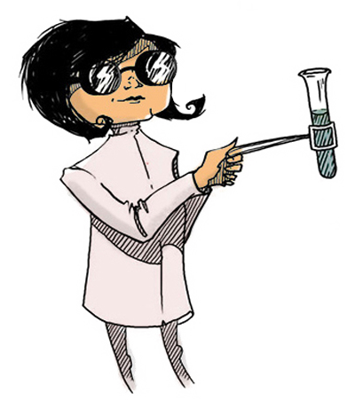

A new digital story series empowering girls to pursue futures in science
Josie Robin is a kid just like any other. What sets her apart, though, is her dogged determination to know everything there is to know about science so she can become a scientist when she grows up. She’s a girl who, when faced with a problem, knows there’s a scientific solution out there…and stops at nothing to find it.
Josie’s incredible and fun adventures bring the world of science to vivid and dramatic life. Through the power of storytelling, the series aims to break gender stereotypes and embolden girls to see scientific futures for themselves as easily as boys do.